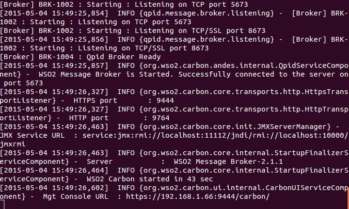
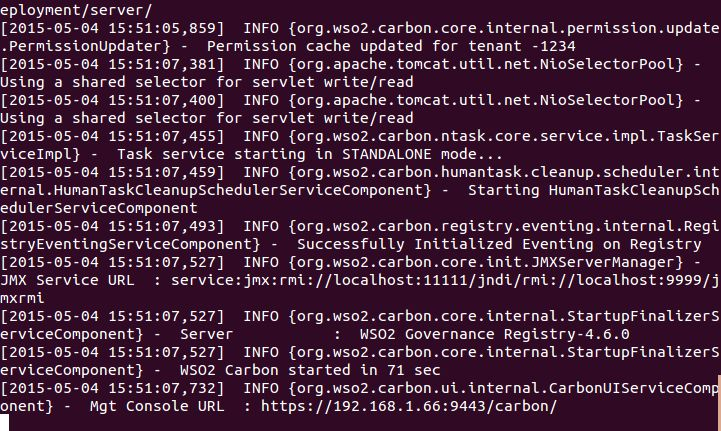
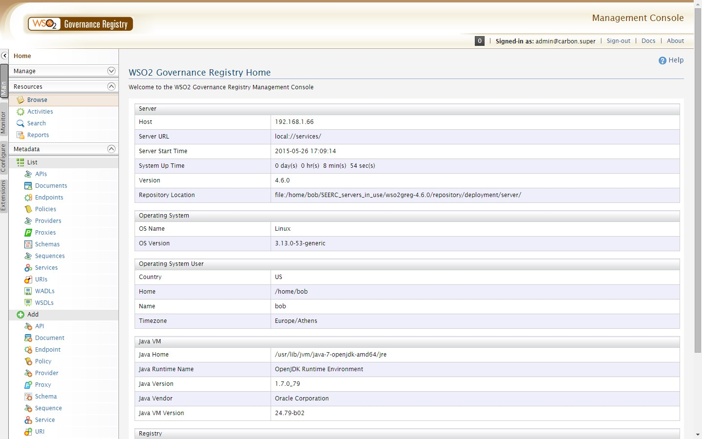
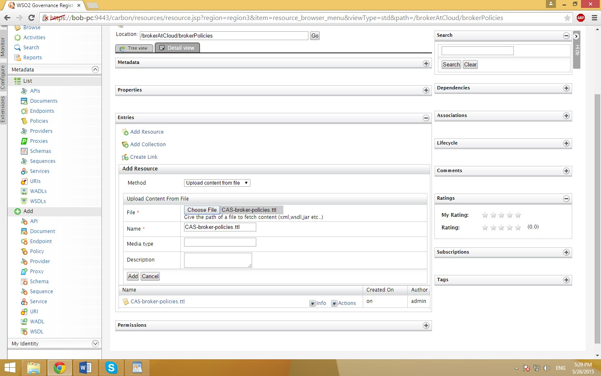

Scope of the guide
Broker@Cloud is offering a framework, services, mechanisms and tools for different quality assurance and optimization tasks on cloud service brokerage platforms along the service lifecycle.
The adopter striving for a Broker@Cloud-enabled Cloud Service Brokerage Platform has to perform the following main tasks:
Installation Guidelines
Here you learn how to install the different parts of the Broker@Cloud Platform.
Prerequisites
- You have Java 7 JDK installed on your system
- The
JAVA_HOMEenvironmental variable is pointing to the Java 7 installation - The locations where you extract the various software artifacts do not contain whitespaces in their path
- You have Eclipse Luna (version 4.4.0) installed
Pub/Sub Installation
- The Pub/Sub system that has been used for Broker@Cloud is the WSO2 Message Broker version 2.1.1, which can be downloaded from here: Message Broker
- Extract the downloaded .zip file to a location in your machine, this will be called the
MB_HOME. - The Pub/sub needs to be run in a different port than the default one. For this purpose, edit
MB_HOME/repository/conf/carbon.xml, find the Offset tag and change its value to 1. Save and close the file.
SC3 Installation Service Consitency and Compliance Checking module
SC3 seamlessly integrates with the following two components:
- WSO2 Governance Registry 4.6.0
- Apache Tomcat 6
WSO2 Governance Registry 4.6.0 Installation
- The WSO2 Governance Registry 4.6.0 can be downloaded from here: GReg
- Extract the downloaded .zip file to a location in your machine, this will be called the
GREG_HOME
Apache Tomcat 6 Installation Installation
- Apache Tomcat 6 can be downloaded from here: Apache Tomcat
- Extract the downloaded .zip file to a location in your machine, this will be called the
TOMCAT_HOME
SC3 Setup
- All the software artifacts of the SC3 system are located in the following GitHub repository: Broker@Cloud Git
- Clone this repository locally to your machine
- Import the following projects from the cloned repository within Eclipse:
MessageBrokerPolicyCompletenessComplianceBrokerLibsMessageBrokerComponentsorg.seerc.brokeratcloud.webservice- Next:
- Go to
Serverstab inside Eclipse - Right-click inside the panel and select
New → Server - Select
Apache → Tomcat v6.0 Server - Click
Browsenext toTomcat Installation Directoryand select theTOMCAT_HOMEdirectory you’ve created earlier - Click
Nextand add theMessageBrokerComponentsand theorg.seerc.brokeratcloud.webserviceprojects to theConfiguredcolumn - Click
Finish - Clean and re-build your projects within Eclipse
- Export the first two projects above as JAR files and the last two as WAR files
- Copy the generated JAR files to the
<GREG_HOME>/repository/components/libfolder and the generated WAR files to the<TOMCAT_HOME>/webappsfolder - The BrokerLibs project has a
libfolder. Copy all the contents of this folder to the following two destinations: GREG_HOME/repository/components/libTOMCAT_HOME/lib- Download and install the WSO2 Developer Studio. This can be downloaded from here: Developer Studio
- Click on the version of
Eclipse JavaEEKepler + Developer Studio v 3.7.1that suits your system specifications - Extract the downloaded .zip file to a location in your machine, this will be called the
WSO2DEV_HOME - Open WSO2 Developer Studio and import the following projects from the previously cloned repository:
BrokerAtCloudBrokerPolicyValidationHandlerMessageBrokerPolicyCompletenessComplianceServiceDeprecationHandler- Download this library
- Rename it to
org.wso2.carbon.registry.api_4.0.0.jarand place it insideECLIPSE_WORKSPACE/.metadata/.plugins/org.wso2.developerstudio.eclipse.libraries/libwhereECLIPSE_WORKSPACEis the workspace you are currently working on inside WSO2 Developer Studio. - Expand the
BrokerPolicyValidationHandlerproject and right-click onBrokerAtCloudsub-project - Select
Export Composite Application Project, select a path to export to and clickFinish - A
BrokerAtCloud_1.0.0.carshould be generated there - Copy this file to
GREG_HOME/repository/deployment/server/carbonapps(create thecarbonappsfolder if it doesn’t exist)
PuLSaR Installation Continuous Optimisation module
- All the software artifacts of PuLSaR are located in the following GitHub repository: Broker@Cloud Git.
- Clone this repository locally to your machine.
- Alternatively you may download only the PuLSaR project.
- Create a new database in MariaDB using your favorite tool (e.g. HeidiSQL).
- Connect to the newly created database (e.g. using HeidiSQL) and execute script
var/maria_db/initialize_db.sqlorvar/maria_db/initialize_db_with_sample_data.sql. - Open a command prompt window (in Windows start
cmd.exe; in *nix/Linux start abashshell) - Change directory to the location where PuLSaR files reside (e.g.
cd brokeratcloud/PuLSaR). - Edit file
src/main/resources/feedback.propertiesand set the correct values to parametersdb.conn-str, db.username, db.password. - Give
mvn clean package. (An internet connection is required the first time you run this command in order to download and cache dependencies) - Run script
bin\deps.bat(in Windows) orbin/deps.sh(in *nix/Linux). (An internet connection might be required the first time you run this command in order to download and cache dependencies) - Run script
bin\fuseki-setup.bat(in Windows) orbin/fuseki-setup.sh(in *nix/Linux).
Configure PuLSaR
- To add/delete/modify pulsar users edit file
jetty-users.properties. After saving changes copy file intobindirectory and overwrite any existing file. - To change MariaDB connection settings edit file
src/main/resources/feedback.propertiesand then recompile using commandmvn package. You will need to restart PuLSaR in order the new settings to take effect. - To change Pub/sub settings edit file
src/main/resources/pubsub.propertiesand then recompile using commandmvn package. You will need to restart PuLSaR in order the new settings to take effect. - To change logging settings edit file
src/main/resources/log4j.propertiesand then recompile using commandmvn package. You will need to restart PuLSaR in order the new settings to take effect.
Starting PuLSaR
- First start MariaDB if not already running.
- Run script
bin\fuseki.bat(in Windows) orbin/fuseki.sh(in *nix/Linux). - Run script
bin\pulsar.bat(in Windows) orbin/pulsar.sh(in *nix/Linux). - Run script
bin\cli.bat(in Windows) orbin/cli.sh(in *nix/Linux). - When CLI command prompt
PULSAR>write givefeedback schedule 60000and press ENTER. - The following links should now be available on your system:
- You can logging using any user listed in file
jetty-users.properties.
Stopping PuLSaR
- At CLI command prompt
PULSAR>typeq(shorthand for quit) and press ENTER. - At PuLSaR console (
bin\pulsar.bat) hitCtrl+Cin order to close console. - At Fuseki console (
bin\fuseki.bat) hitCtrl+Cin order to close console. - Optionally, stop MariaDB.
FPR Installation Failure Prevention and Recovery module
All the source code of the FPR mechanism is stored in the Broker@Cloud repository. Please clone it to your local machine before installation.
The failure analysis tool
System requirements
- JDK - 1.6 and above
- Minimum memory - 2GB
- Processor - Intel Dual-Core 1GHz or equivalent at minimum
- Windows users must install Cygwin.
Start the failure analysis mechanism
- Clone the Broker@Cloud repository
- Change directory (via cd) into
<path-to-BrokerAtCloud-repository>/FailureAnalysis/bin - Run
./failureanalysis.sh. The cep server will start working, following the predefined failure analysis rules. - If users want to modify the rules or create new ones, they can access the admin console at
https://<ip-of-server>:9443/carbon/.
The failure prevention and recovery tool
The failure prevention and recovery tool is implemented in the form of a set of Eclipse plugins. We recommend users to install and run it within the Eclipse environment to use the full function.
Install Eclipse
- Install Java. We recommend Java 7 or above.
- Download Eclipse. The FPR tool has been tested on the particular Eclipse package named "Eclipse Modelling Tools, Luna, Release 2", which can be downloaded here.
- Unwrap Eclipse. For the sake of stability, we highly recommend that the entire Eclipse path does not contain any white space. For example, the eclipse folder should not be put under
C:\Program Files\or any of its sub folders.
Launch the FPR tool
- Launch Eclipse and create a new workspace
- Import the following projects under
<path-to-brokerAtCloud-repository>/FailurePreventionAndRecoveryinto the new workspace, i.e.,diva.model.editdiva.model.simulation.uidiva.brokeratcloud.fprdiva.model.editordiva.modeldiva.model.simulation
- Right click the project named
diva.brokeratcloud.fpr, chooserun as → Eclipse Application. A new Eclipse window will be created - In the new Eclipse, choose menu
Diva Rest → Run, or the equivalent toolbar button (the eighth one from the left).
It is worth noting that the use of FPR tool depends on a running pub-sub server. The address of the pub/sub server is configurable at the properties file: diva.brokeratcloud.fpr/plugin.properties, under the key pubsubServer.
VTTS Installation Verification and Testing Tool Suite
The Verification and Testing Tool Suite (VTTS) for model-based testing of cloud software services may be accessed in several ways. The University of Sheffield offers a Testing-as-a-Service prototype, currently available here:
VTTS may also be installed as part of a cloud service brokerage platform conforming to the Broker@Cloud framework; or even as a standalone module for model-based testing of cloud software services. Installation instructions are provided below.
Prerequisites for the Verification and Testing Tool Suite
Depending on your preferred means of launching the tools, the following prerequisites should be satisfied
- Command line usage: To run the tools individually on a Unix or Windows command line, we recommend that you have Java JDK 1.7 installed. You will also need the JAST library.
- Java Swing demo GUI: To run the standalone Java Swing demonstration, we recommend that you have Java JDK 1.7 installed. You will also need the JAST and JSyntaxPane libraries.
- Eclipse IDE integration: To run the tools within the Eclipse IDE, we recommend you have Java JDK 1.7 and Eclipse v4.0 (Luna) installed. You will also need the JAST and JSyntaxPane libraries.
- JUnit test execution: To execute sample test suites generated in Java for Java service clients, we also recommend you install JUnit 4.0 (also available as a library within Eclipse).
- Web service execution: To execute SOAP or REST web service clients, you will need to install additional libraries, some standard examples of which are included below for convenience (all are available from the original providers).
Installation of the Verification and Testing Tool Suite
The main download bundles are available at the Broker@Cloud GitHub, or can be downloaded from: Broker@Cloud Verification and Testing Tool Suite. For convenience, the software is split into two bundles:
brokeratcloud-vtts.zip- the main VTTS bundlebrokeratcloud-vtts-lib.zip- the external libraries
Download and unizp both bundles. The main bundle should contain the source code Java archive file brokeratcloud-vtts-1.0.jar. The library bundle should contain a root folder brokeratcloud-vtts-lib, containing a number of folders, each containing one or more library jar files.
Copy the contents of this library folder to somewhere on your machine from which your Eclipse, or JDK CLASSPATH, can access the library files as external jar files. Below, we will refer to the root of your library as lib, but you could use some other name.
If using Eclipse, create a new Eclipse project BrokerAtCloudVTTS (select: File → New → Java Project, and enter the project name). Import the main source code Java archive file brokeratcloud-vtts-1.0.jar. You should be able to see a collection of folders, which include:
src- the source code directory, containing Java sourcesdoc- the documentation directory, initially empty (see below)xml- the xml directory, containing service specifications
You should also have some unresolved dependencies, showing as red checkboxes on folders containing Java packages. In your Eclipse IDE, configure your build path (right-click on the project name BrokerAtCloudVTTS, then select: Build Path → Configure Build Path → Add External JARs) to include the following external jar-files provided in your root library folder (here called lib, but use the name you gave it):
lib/jast/jast-1.1.jar- the Java Abstract Syntax Trees marshalling librarylib/jsyntaxpane/jsyntaxpane-1.0.0.jar- JSyntaxPane code formatting library
Select OK to complete this, after you have added both libraries, and ensure that the red checkboxes have now disappeared.
The VTTS tools may now be used directly to analyse and verify the example XML service specifications provided in the /xml folder. You may also generate high-level test-suites, which are also stored as XML under the same folder. Please see the end-user guide for further information on how to use the tools. The generated documentation (see below) also has usage instructions for each tool.
Generating Documentation for the Verification and Testing Tool Suite
Detailed navigable documentation may be created from the main source code bundle, using the javadoc tool provided as part of your Java JDK installation. Eclipse may not have a particular javadoc generator installed, and a dialog will ask you to point to your particular JDK installation.
Generate Javadoc documentation in Eclipse (left-click the project name BrokerAtCloudVTTS, menu select: Project → Generate Javadoc). This will open a dialog where you must fill in the path to your JDK's javadoc program; and you should also tell Eclipse where to put the generated documentation. For this, use the directory set up within the project, ready to receive the documentation. These might look something like this under Windows:
C:\Program Files\Java\jdk1.7.0_80\bin\javadoc.exe<path-to-eclipse>\Eclipse\BrokerAtCloudVTTS\doc
Select OK to complete this, after ensuring both dialog fields point to the right places, and you should see a log appear in the Eclipse output console as Javadoc is created. Note that VTTS code should generate no Javadoc warnings; but user-generated classes added subsequently may generate warnings, if not fully documented by the user. To view the documentation, open the file:
<path-to-eclipse>\Eclipse\BrokerAtCloudVTTS\doc\index.html
Selection of External Libraries for Executing Web Services
You are free to translate the high-level XML test-suites generated by our tools into whatever concrete format you need for your cloud service technology. For demonstration purposes, we have provided three concrete groundings, which all assume Java clients to invoke each service, and use JUnit as the technology to execute the tests. If you generate concrete JUnit test-driver classes using our demonstration groundings, the resulting test-drivers will have further dependencies, which may appear in the project as red checkboxes.
- For testing simple Java clients (POJOs), you will only need to install JUnit 4.0, which is provided as part of the Eclipse distribution. Your generated test-driver will depend on a Java client to be tested.
- For testing JAX-WS Java clients for SOAP web services, you will have used JAX-WS to create your web service and also to generate a Java client from the WSDL description of the service. Your generated test-driver will depend on a Java resource class and a Java interface to the service, in the style expected by JAX-WS.
- For testing JAX-RS Java clients for REST web services, you will have installed a suitable REST service. Your generated test-driver will depend on the Apache Jersey reference implementation of JAX-RS; and also on the Google Gson library for unmarshalling JSON data.
We assume that it is easy for you to obtain JUnit, JAX-WS and JAX-RS libraries as part of your Java Enterprise Edition platform. For convenience we have bundled some of the other libraries in the second download bundle. This bundle contains the root folder: brokeratcloud-vtts-lib, which has the following structure:
gson- the Google Gson library for marshalling and unmarshalling JSON format data (needed for our generated REST clients).jackson- the Jackson library for processing JSON format data in different ways (may be needed for future REST clients).jast- the Java Abstract Syntax Trees library for marshalling and unmarshalling XML (needed by all verification and testing tools).jersey- the Apache Jersey reference implementation of a JAX-RS REST web service (needed for our REST clients).jsyntaxpane- the Google JSyntaxPane library for syntax highlighting of code (needed by the standalone Java Swing application).
Add the relevant jar-files to your build path as and when you need them (in Eclipse, this will be indicated by a red checkbox appearing on a generated Java file, when this file depends on types that are as yet unknown to the environment). See the instructions above on how to configure your build path.
Starting the Broker@Cloud Framework Instance
- First start the WSO2 Message Broker by executing the file
wso2server.batorwso2server.shlocated in theMB_HOME/binfolder, depending on the platform you are using (the former for MS Windows and the latter for Linux and Mac) - You should end up with a terminal screen similar to the one below: 2 Message Broker" class="img-responsive">
- Then start the WSO2 Governance Registry by executing the file
wso2server.batorwso2server.shlocated in theGREG_HOME/binfolder, depending on the platform you are using (the former for MS Windows and the latter for Linux and Mac) - You should end up with a terminal showing messages like the ones below: 2 Message Broker" class="img-responsive">
- Finally, start the Apache Tomcat server by executing the file
startup.batorstartup.shlocated inTOMCAT_HOME/binfolder, depending on the platform you are using (the former for MS Windows and the latter for Linux and Mac) - The following links should now be available on your system:
Broker Policy Guidelines
After the installation the Broker@Cloud framework has to be initialized with a broker policy that should be applied to the lifecycle management of the service descriptions managed by the cloud service brokerage platform. The next deal with broker policy management, i.e., explain how to create, verify and deploy broker policies.
What is a Broker Policy?
A cloud service broker in order to be able to serve as an intermediary needs to establish a shared understanding about the meaning and format of the artifacts exchanged with the actors of its ecosystem: service providers, service consumers, and hosting platforms. The role of a broker policy is to provide a shared data model for:
- expression of service descriptions of service providers or hosting platforms
- expression of preferences of the consumers
- other data artifacts exchanged between the actors of the ecosystem and mechanisms of the framework
Broker@Cloud framework provides support for two different types of broker policies with respect to handling of SLAs:
- Type1: Cloud service brokerage platform defines the fixed structure for service levels and their bundling
- Type2: Cloud service brokerage platform defines a fixed set of distinguished and bundled service levels
Type1 broker policies
A Broker completely specifies SLAs and bundles them into distinguished Service Level Profiles. Providers can only select between Service Level Profiles offered to them by the broker.
Type2 broker policies
A Broker specifies the structure of the SLAs and bundles them into distinguished Service Level Profile classes. Providers select between offered Service Level Profile classes and specify their own SLAs following the structure and restrictions of the selected Service Level Profile class.
The detailed documentation of all theoretical and technical aspects related to the concept and structure of the broker policy is available in the deliverables D30.1 and D30.2.
Broker Policy Development and Verification
A broker policy is described in Linked USDL with some specific extensions and conventions introduced in the Broker@Cloud methodology. Linked USDL is specified in RDF Schema on top of a number of RDF Schema ontologies like Good Relations. Hence, a text editor is the most flexible way to specify a broker policy that can potentially use the full modelling power offered through the ontologies linked into the Linked USDL. In this case, the broker can also take into consideration broker policy aspects that might be relevant for the cloud service brokerage platform but are not covered by the minimal requirements on a broker policy specified by the Broker@Cloud framework
As a starting point we are offering an exemplar of a valid commented broker policy of Type2. The comments highlight the parts that make a difference between Type1 and Type2 broker policy so that by removing some parts specific to Type2 you get a valid broker policy of Type1. Using a text-based RDF-editor, like the rdfEditor contained in the dotNetRDF Toolkit improves not only readability but also provides some usefull syntactic checks.
The modelling power and flexibility of Linked USDL has also a downside. Creation of a valid broker policy using a text-based editor is a time consuming and an error-prone procedure. We are offering two kinds of support tools: graphical broker policy editors for both types of broker policy and an online REST API for broker policy validity checking offered by the SC3 mechanism. A graphical text editor significantly simplifies the creation of a broker policy. However, only creation of a minimal broker policy is supported, i.e., only creation of parts absolutelly necessary to satisfy the Broker@Cloud requirements on a Broker Policy specification is supported. The validity checking API on the other hand checks any broker policy specified in Linked USDL if it is compliant with the Broker@Cloud requirements on a Broker Policy specification.
Graphical broker policy editors
- Broker Policy Editor (Type1)
- Broker Policy Editor (Type2)
Broker Policy validation
Broker@Cloud project is operating an instance of a Broker@Cloud framework that can be used for different testing and validation tasks. This instance can be used also for validation of your broker policies. Of course, you can use also your own Broker@Cloud instance if you already installed one.
If you are using the Broker@Cloud framework instance operated by the Broker@Cloud project: POST the broker policy description to the following URL: http://213.249.38.66:3335/org.seerc.brokeratcloud.webservice/rest/brokerPolicy/validate
For testing purposes, you can use e.g., RESTGate - a web-based client for REST services to test online or download a REST client for your browser like this Simple Rest Client for Google Chrome.
The following two screenshots show the validation request and response of the valid commented broker policy of Type2 in the RESTGate client.
{kind=link}
{kind=link}
Broker Policy Deployment
Broker@Cloud project is operating an instance of a Broker@Cloud framework that can be used for different testing and validation tasks. This instance can be configured with your broker policy. Of course, you can also configure your own Broker@Cloud instance if you already installed one.
Broker Policy deployment at the Broker@Cloud framework test instance (operated by Broker@Cloud)
PUT the broker policy description to the following URL:http://213.249.38.66:3335/org.seerc.brokeratcloud.webservice/rest/brokerPolicy/upload
You can use e.g., RESTGate - a web-based client for REST services to upload your broker policy online or download a REST client for your browser like this Simple Rest Client for Google Chrome.
The following two screenshots show the validation request and response of the valid commented broker policy of Type2 in the RESTGate client.
{kind=link}
{kind=link}
Broker Policy deployment at your own Broker@Cloud framework instance
The deployment of a Broker Policy can also be done from within the WSO2 GReg environment itself:
- Login to GReg by visiting: https://localhost:9443
- Enter username and password (
admin,admin). - Click the
Browseoption of theResourcesmenu on the left.

- You will be directed to the resource browser of GReg. Expand the
brokerAtCloudfolder and click on thebrokerPoliciesfolder. - Click the
Add Resourceoption in theEntries panel. Leave the Methodoption toUpload content from fileand click theChoose Filebutton to browse for your Broker Policy file in your file system. TheNameof the file should be auto-completed, but you may change it to your needs.

- Finally, click the
Addbutton. If the validation of your BP has passed, you will receive a message that it has been successfully uploaded and your file will be added in theEntrieslist of thebrokerPoliciesfolder. - The Broker Policy is now onboarded and is ready to be used by the SC3 mechanism for evaluating Service Descriptions against it.
- If the submitted Broker Policy is not valid, you will receive an error message explaining what went wrong with the validation. In this case, the Broker Policy is not added to GReg and needs to be corrected and re-submitted before being accessible to the SC3 mechanism.
{kind=link}

{kind=link}


Integration Guidelines
Integration with the SC3 mechanism
The Broker@Cloud framework provides two methods for integrating with the SC3 mechanism and evaluating a Service Description (SD):
- A method which follows the request-response paradigm for posting an SD to the SC3 mechanism and for receiving the corresponding report with the evaluation outcome. This method does not deploy the SD to the underlying WSO2 GReg infrastructure. It is thus suitable for one-off SD evaluations, e.g. when someone is interested in quickly determining whether an SD abides by a particular broker policy.
- A method which uses the Pub/Sub system for submitting an SD to the SC3 mechanism and for receiving the corresponding report with the evaluation outcome. This method does deploy the SD on the underlying WSO2 GReg and it is thus suitable when someone is not only interested in evaluating the SD, but also in storing it in the Broker@Cloud platform.
Integration with the PuLSaR mechanism
The Broker@Cloud framework provides two methods for integrating with PuLSaR mechanism for specifying preference profiles, requesting recommendations and managing preference policy:
-
The first method follows the request-response paradigm for retrieving and managing preference profiles, requesting recommendations, managing preference policy specifications and importing/exporting preference policy. Requests must be directed to the PuLSaR public API and they must also conform to the corresponding message formats. The Public API encompasses RESTfull webservice endpoints, whereas messages exchanged are in JSON format. The only exception is when importing/exporting preference policy, in which case "
multipart/form-data" and "text/turtle" formats are used. -
The second method regards programmatic integration using the PuLSaR framework classes (packages
eu.brokeratcloud.common,.fuseki,.opt,.persistence,.rest.optand.utiland their sub-packages). The Java programming language or any language capable to use Java bytecode can be used. The core classes are those in theeu.brokeratcloud.rest.optpackage as well as the classeu.brokeratcloud.opt.RecommendationManager. An alternative integration approach could leverage the interactive command-line tool of PuLSaR (classeu.brokeratcloud.opt.engine.CLI).
Guide to Verification and Testing
The Verification and Testing Tool Suite (VTTS) for software services in the cloud can be accessed in several ways:
- as an online demonstration service - see the website hosted by the University of Sheffield.
- as a downloadable package - user guide instructions follow below.
- as a CSB platform service (TBD) - integration instructions (TBD)
The following instructions assume you have downloaded the software bundle for the Broker@Cloud Verification and Testing Tool Suite (VTTS). For the online demonstration service, please refer to the University of Sheffield website above.
In a Nutshell: Verification and Testing of Cloud Services
The overall goal of of the EU FP7 Broker@Cloud project is to provide new methods and mechanisms for continuous quality assurance for enterprise cloud service brokers. The expectation is that many more software vendors will become involved as cloud ecosystem partners, offering competing services on brokered platforms. Keeping track of standards and quality in this rapidly expanding market is challenging. Some of the Broker@Cloud tools offer support for the governance of the service lifecycle, to ensure that offered services meet the expectations of brokerage platforms.
The verification and testing tools provide a measure of functional quality control, to ensure that offered services meet certain specification standards and can be used interchangeably with other services meeting the same standards. The standard for service is developed as a service specification, which can be checked by tools (verification) and from which exhaustive test-suites may be generated automatically (testing), to ensure that aspiring instances of the service are actually compliant to the specification. The benefits of this approach include:
- standard service specifications - these apply a gentle standardising force to the way in which services are designed and developed, which will in the future support the creation of many interoperable services.
- automatic validation - allows the designer to validate a specification to ensure that the states and transitions of the service correspond intuitively to the way they want the service to behave.
- automatic verification - allows the designer to verify the specification for consistency and completeness, in particular to ensure that every specified operation is deterministic and non-blocking.
- automatic test generation - allows the designer to generate technology-neutral test-suites that completely cover the states and transitions of the specification and all equivalence-partitions of its operations.
- automatic test grounding - allows the designer to select technology-specific translations of test-suites into executable JUnit test libraries for Java, SOAP or REST services (with POJO, JAX-WS or JAX-RS Java clients).
Further kinds of test grounding to other formats are possible, if you wish to extend our framework, which offers a standard Visitor Pattern style of translator.
Using the Verification and Testing Tool Suite
The Broker@Cloud Verification and Testing Tool Suite (VTTS) supplied in the download bundle is designed to be consumed in several different ways, according to preference. To find out more about each of these ways of launching the tools, please create the Javadoc documentation from the source code distribution, which has detailed navigable guidance on all aspects of usage. The tools are offered as:
- command-line programs - Java main programs executable in the JRE 7 runtime, that accept all parameters on the command-line, then read and write XML files; these are found in the main package:
uk.ac.sheffield.vtts. - Java Swing demonstrator - a Java Swing GUI that has four tabs to execute the four main tools as a standalone application, reading files and displaying formatted output; this is found in the package:
uk.ac.sheffield.vtts.gui. - back-end CGI programs - Java programs designed to be launched by CGI scripts, that read web form parameters on standard input, read XML via URLs and display XML in a web browser; these are found in the package:
uk.ac.sheffield.vtts.web.
All of the tools expect to consume and produce XML files, a format chosen for ease of transmission, and to allow both human- and machine-processing of the results (but the test grounding tool generates Java source code as output). By default, they use the folder-structure of the distribution to store further generated files. There are separate folders for XML documents, generated Java test-drivers and Java service clients (further subdivided into POJO, JAX-WS and JAX-RS flavours).
Cloud Service Specification
The starting point for developing high-quality cloud services is to develop a model specification for what the service is expected to do. Conceptually, a specifcation is a combination of a finite state machine, expressing the different responsive modes of the service in which certain operations are available or unavailable, and a functional protocol expressing the equivalence-partitioned behaviour of each operation, according to different specified input or memory conditions.
A specification is developed as an XML document that conforms to the Broker@Cloud standard schema for service specifications: http://staffwww.dcs.shef.ac.uk/people/A.Simons/broker/ServiceSchema.xsd (which is maintained on the Sheffield website). Since developing a specification may be a new venture for some, we have developed a Guide to Writing Service Specifications which explains the concepts and develops a specification in stages. Otherwise, the software distribution comes with several example service specifications that progressively introduce more aspcts of the specification language:
xml/Login.xml- is a simple two-state login service, mainly to show the design of the state machine;xml/Account.xml- is a two-state bank account service that offers banking operations that update memory variables;xml/ContactList.xml- is a three-state example that mimics the selection behavior of GUIs with list insertion and deletion;xml/HolidayBooking.xml- is a three-state vacation booking service that also introduces stronger conditions;xml/ShoppingCart.xml- is a four-state shopping service with a strong modal flavour and introducing symbolic types;xml/DocumentStore.xml- is a complex versioned document storage service, with symbolic types and server exceptions.
Cloud Service Validation
Validation is a semi-formal human inspection process in which aspects of the specification are reflected back to the designer, to help determine whether the right design has been developed. This is done by checking the completeness of the state machine for the cloud service and reporting back to the designer, who may then decide whether further states or transitions are desired in the design. There is no right or wrong answer; but the designer should be able to determine whether the state machine for the service should handle, or ignore particular events in each state.
The validation tool checks the completeness of a service's state machine (it checks statically whether each event is explicitly handled by a specified transition in every state). The tool reads the XML file containing the service specification in XML format. It writes machine-readable output in XML format, describing the state machine with extra annotations indicating the analysis of states and transitions.
java uk.ac.sheffield.vtts.ValidateMachine <specFile.xml>
If the input file can be read, the output will be an XML file containing the analysed state machine specification (otherwise an error message will be displayed). The root
Machine node will contain a Notice node, which may contain further Analysis or Warning nodes. A Warning is issued if any states cannot be reached in the machine, or if known events are not handled by the machine. These are faults in the specification that should be rectified. An
Analysis is issued if any state ignores certain events. This is not necessarily a fault, and is provided for information.
A Notice is then also attached to each State node, giving an
Analysis of which events are ignored by that state. A state may legitimately choose to ignore certain events; but the analysis allows you to check that events are handled as you really intend. The Warning is repeated for each unreachable state, as a reminder.
Cloud Service Verification
Verification is a formal process in which a specification is checked for completeness and consistency. This is done by checking each operation, to ensure that whatever the current state of variables in memory, and whatever values are supplied as inputs, there will always be one path that is executable. The verification process uses symbolic evaluation to determine possible partitions in the input space and symbolic subsumption to check which path is enabled. The verification process can detect whether the specification contains nondeterminism (more than one path enabled) or blocking (no path enabled) for particular inputs and states.
The verification tool checks the completeness of a service's protocol (it checks statically whether single branches exist for each logical input and memory condition of each operation). The tool reads the XML file containing the service specification in XML format. It writes machine-readable output in XML format, describing the service protocol with extra annotations indicating the analysis of input/memory partitions and whether the specified operations cover all of these cases.
java uk.ac.sheffield.vtts.VerifyProtocol <specFile.xml>
If the input file can be read, the output will be an XML file containing the analysed protocol specification (otherwise, an error message will be displayed). The root
Protocol node will contain a Notice node, which may contain further
Analysis or Warning nodes. An Analysis node is issued if the memory is correctly initialised and each operation is found to be deterministic. A
Warning node is issued if the memory is not fully initialised, or operation inputs are not all bound, or known events are not handled by the protocol specification. A
Warning is also issued if an operation is found to be blocking (unable to respond), or non-deterministic (able to respond ambiguously) under certain inputs. These warnings indicate faults in the specification that should be corrected.
Cloud Service Test Generation
Model-based testing is a formal process in which all the paths through a specification are systematically explored to generate all possible test sequences that the service might encounter. Test sequences are typically generated to some finite bounded depth, to avoid an explosion of cases. However, it is important to cover all of the states and transitions of the service, and also to attempt all significant input partitions that might trigger different behaviour. The formal specification captures both of these aspects, such that the test generation tool can provide an ideal test suite that covers all the paths in the service specification. The high-level test suite is expressed in a technology-agnostic way that must then be grounded in any particular implementation technology.
The test generation tool generates a high-level test suite from a software service specification. The tool reads the XML file containing the service specification in XML format. Two further parameters may be supplied, either as attributes of the Service node, or as extra command-line/GUI/web-form parameters. These are: testDepth (the maximum path length to be explored from each state) and multiTest (a boolean flag indicating whether to generate fewer multi-objective tests). It writes machine-readable output in XML format, describing a complete test-suite, with annotations indicating optimisations that were performed.
java uk.ac.sheffield.vtts.GenerateTests <specFile.xml> [<testDepth:int>
<multiTest:bool>]
If the input file can be read, the output will be an XML file containing the high-level tests (otherwise an error message will be displayed). The root node TestSuite will contain a
Notice node, whose children nodes consist of Advice nodes describing the stages in generating and filtering the resulting tests, and Warning nodes describing any transitions and states that were not covered in the specification, for the chosen depth of exploration. The remaining TestSequence nodes are the paths to test, presented as an ordered set.
Each TestSequence describes a unique test case, consisting of a sequence of
TestSteps. Typically, the early TestSteps in a sequence denote set-up actions and the final TestStep is the particular step under observation, to be verified (any step annotated with verify="true" should later be checked using e.g. JUnit assertions). However, if multi-objective tests were selected, some TestSequences may also have intermediate verified TestSteps. This is where shorter tests have been merged into longer tests, where the shorter sequence is a prefix of the longer sequence.
Cloud Service Test Grounding
Test grounding is the final stage in the model-based testing process, whereby technology-neutral XML test sequences are converted into concrete tests that can be executed on a given platform. The conversion process is achieved using a Visitor Pattern algorithm which traverses the memory model of the high-level XML test suite generated earlier. Having a separate test grounding stage is useful, because it decouples the test generation phase, a formal process, from any particular implementation technology for the service. Test grounding is normally something to be accomplished by the service provider, to ground the tests according to the particular service technology used. However, we provide three standard groundings as demonstrations. In the following examples, we assume that the System-Under-Test is either a plain old Java object (POJO), or a Java SOAP client built using JAX-WS, or a REST client build using JAX-RS (Apache Jersey) and generate tests grounded in Java for a JUnit test driver fixture.
The test grounding tool generates a concrete JUnit test driver from a technology-neutral test-suite. The tool reads the XML file containing the high-level test suite. It writes a Java source code output file, defining the JUnit test driver, in one of three demonstration formats. Two further parameters may be supplied, either as attributes of the TestSuite node, or as extra command-line/GUI/web-form parameters. These are: grounding (the particular grounding to use, one of: Java, JAX-WS or JAX-RS) and metaCheck (a boolean flag indicating whether to generate assertions to verify the full state and transition behaviour of the service, assuming the service records such metadata for testing purposes). Different versions of this tool also accept further optional arguments for specifying a REST URI (used only in the JAX-RS grounding), or Java package names (the target package for the JUnit test driver; and source packages for the Java service client and resources; the first package is assumed to be the target).
java uk.ac.sheffield.vtts.GroundTests <testFile.xml> [<grounding:enum>
<metaCheck:bool> <endpoint:uri>? <packageName>*]
If the input file can be read, the output will be Java source file containing the executable tests (otherwise an error message will be displayed). The file will define a JUnit test driver class, named following JUnit conventions, and executable in any environment supporting JUnit 4. The test driver's
@Before setUp() method creates an instance of the Service-Under-Test, presumed here to be either a plain old Java object, or a Java SOAP client interface built using JAX-WS, or an Apache Jersey REST client built using JAX-RS. The driver and the SUT can be in different Java packages (if none are supplied, the tools assume by default the package structure defined in the software distribution, which has separate folders for client and test software, and subdivisions within these for each kind of grounding). The
@Test testN() methods of the driver correspond to the test sequences generated by the high-level test generator. By default, each test consists of set-up steps, followed by a verified step, in which the outputs of methods are verified using JUnit assertions.
If multi-objective testing was selected in the test generation phase, each test may contain multiple verified steps, corresponding to additional JUnit assertions inserted in each sequence. Multi-objective testing merges shorter test sequences into longer sequences. This minimises the number of test sequences, while still testing the same objectives. If a full meta-check of state and transition behaviour was requested, further JUnit assertions are generated, to query the system about the last scenario executed and the last reached state. The implemented service must follow certain design-for-test conditions to be fully testable, with operations to reveal its last action and reached state. The example Java POJO clients supplied with the software distribution illustrate how to develop such a testable service. These examples all use the State Pattern for their implementation.
Finally, it should be noted that all generated JUnit software will depend on the existence of a suitable Java client for the tested service. We have provided full implementations of Java POJO clients for all the example specifications, and skeletons for a few JAX-WS clients (really, the service developer should supply these using JAX-WS tools). We have made assumptions that the JAX-RS client is an Apache Jersey REST server that translates JSON data using Google's Gson parser.
Warning: when you first generate test drivers, these will have unresolved dependencies and you will have to include the relevant libraries on your build-path. Please see the:
installation instructions. If you rely on the default package structure, this will appear to create unresolved dependencies within the distributed software bundle - this is not then our responsibility!
Using the VTTS Demonstration Java Swing GUI
To use the Java Swing GUI demonstrator, which also reads and writes files by default to the standard package structure, you only need to launch the main-class in the GUI package. You can either launch this using Run within your Eclipse IDE, or by compiling the main class as an executable jar-file and running it on the command-line, or by double-clicking on the icon for the compiled program.
java uk.ac.sheffield.vtts.gui.BrokerAtCloudVTTS
Thereafter, the usage should be intuitive, assuming you have read the above principles. The GUI tool invokes the same programs described above, but also displays the input and output files in two large panes. It uses Google's JSyntaxPane software to pretty-print both XML and Java text, using syntax highlighting to make the input and output easier to browse. Warning: we have discovered that the syntax highlighting code can be very s..l..o..w.. for longer files (e.g. for test-suites generated to depth 3, or higher) and will take many seconds to render. So we have provided a check-box to disable syntax highlighting!
Using the VTTS Back-End CGI Web Programs
To use the CGI programs, which read XML files from supplied public URLs and write output to a web-browser, you will need to configure your own cgi-bin set-up. Instructions are given in the Javadoc documentation for the software distribution. The basic steps are as follows:
- Compile the VTTS software distribution and make the
model,groundandwebpackages' binary class files available in some directory that is readable by scripts in yourcgi-bindirectory. You will also need JAST 1.1'sastpackage to marshal the XML. - Write four short CGI shell-scripts that launch your Java JRE (6/7) runtime and one of the back-end programs:
WebValidateMachine,WebVerifyProtocol,WebGenerateTestsandWebGroundTests. These are in thewebpackage. - Create four web pages that each contain a web form that invokes one of your CGI scripts as its action, and uses the HTTP POST method to supply all web form parameters on standard input. Parameter names and their meanings are described in the Javadoc for the
webpackage.
As an example of such a web service, you may visit: The Sheffield Broker@Cloud Quality Control website, which uses these programs.